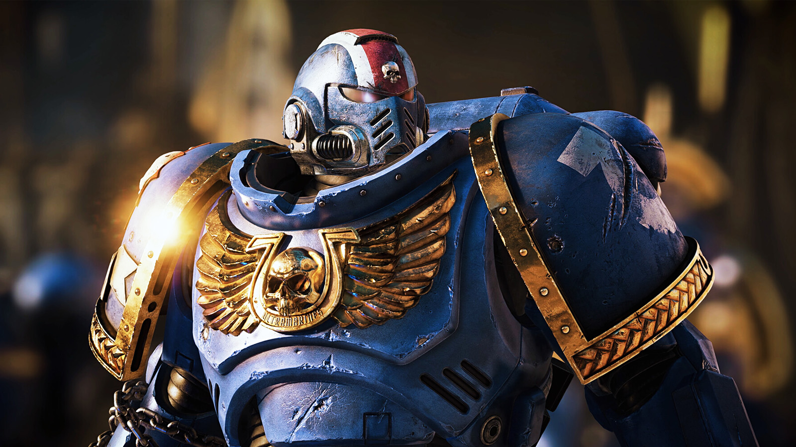
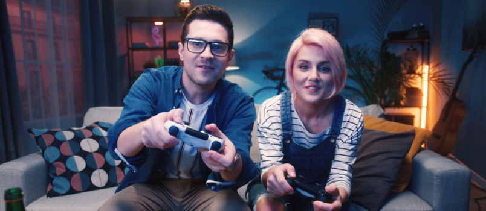
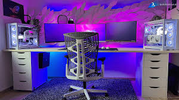

Video Games
Press Start — your next great adventure is loading!
Welcome to the World of Video Games
Video games are one of the most popular forms of entertainment on the planet, enjoyed by billions of people of all ages. From quick phone games you play during a lunch break to epic adventures that take hundreds of hours to complete, there is truly something for everyone. Modern games tell stories as powerful as any movie, challenge your brain like no puzzle ever could, and connect you with friends and strangers from around the world.
Whether you are a complete beginner wondering where to start or a seasoned gamer looking to explore new genres, NerdHub has you covered with everything you need to know about the wonderful world of video gaming.

Gaming Platforms Overview
Games are played on many different types of hardware. Here is a quick look at your options:
- PC (Personal Computer) – The most versatile platform. Thousands of games via stores like Steam. Can be upgraded over time. (See our PC Building page!)
- PlayStation 5 (PS5) – Sony's latest console with stunning graphics and exclusive titles like God of War and Spider-Man.
- Xbox Series X/S – Microsoft's console family. Xbox Game Pass gives you access to hundreds of games for a monthly fee.
- Nintendo Switch – A hybrid console that works at home and on the go. Home to beloved Nintendo franchises like Mario, Zelda, and Pokémon. Very family-friendly.
- Mobile – Smartphones and tablets offer thousands of free-to-play games perfect for casual gaming anywhere.
Game Ratings Guide (ESRB)
The Entertainment Software Rating Board (ESRB) rates games to help families choose age-appropriate content. Here is what each rating means:
| Rating | Who It's For | Content Notes |
|---|---|---|
| EC – Early Childhood | Ages 3+ | Very gentle content, no scary themes |
| E – Everyone | Ages 6+ | Mild cartoon action or mild language |
| E10+ – Everyone 10+ | Ages 10+ | Mild fantasy violence or suggestive themes |
| T – Teen | Ages 13+ | Violence, mild language, suggestive themes |
| M – Mature | Ages 17+ | Intense violence, strong language, adult content |
Popular Game Genres
Not sure what type of game is right for you? Here is a quick tour of the most popular genres:
Role-Playing Games (RPGs)
Create a character and guide them through a story-rich world, gaining experience and becoming more powerful. Examples: Final Fantasy, The Elder Scrolls, Pokémon.
Platformers
Jump, run, and dodge your way through colorful levels. Easy to pick up and great for all ages. Examples: Super Mario, Sonic the Hedgehog, Celeste.
Strategy Games
Think carefully, plan ahead, and outwit your opponents. Great for people who love puzzles and problem-solving. Examples: Civilization, Stardew Valley, Into the Breach.
Co-op / Multiplayer
Team up with friends or family online or on the same couch. Examples: Minecraft, It Takes Two, Overcooked, Mario Kart.
Beginner's Game Recommendations
These titles are widely praised as perfect starting points for new gamers, chosen for their intuitive controls, fun gameplay, and family-friendly content:
- Minecraft (E10+) – Build, explore, and create in a world of blocks. No two games are ever the same. Available on every platform.
- The Legend of Zelda: Breath of the Wild (E10+) – An open world adventure that rewards curiosity. One of the highest-rated games ever made.
- Stardew Valley (E) – A relaxing farming and life simulation game with no pressure and endless things to discover.
- Mario Kart 8 Deluxe (E) – The ultimate couch co-op racing game. Perfect for family game nights.
- Hollow Knight (E10+) – A beautiful and challenging adventure game in a world of insects and underground kingdoms. Great for older kids and teens.

Couch Co-op Session
Gaming SetupOnline Safety for Gamers
Online multiplayer games are a fantastic way to connect with others, but it is important to stay safe. Here are some good habits for everyone, especially younger players:
- Never share your real name, address, school, or phone number with people you meet online in games.
- Use a gaming username instead of your real name on public profiles.
- If someone says something mean or makes you uncomfortable, use the game's block and report features.
- Parental controls are available on every gaming platform to manage play time and online interactions.
- Most games have a "mute" option for voice chat — feel free to use it whenever you want a quieter experience!
Useful Links
- Steam – The largest PC gaming storefront with frequent sales
- ESRB Ratings – Look up any game's rating and content descriptors
- Nintendo Switch – Family-friendly gaming platform and game library
- Xbox Game Pass – Access hundreds of games for a monthly subscription